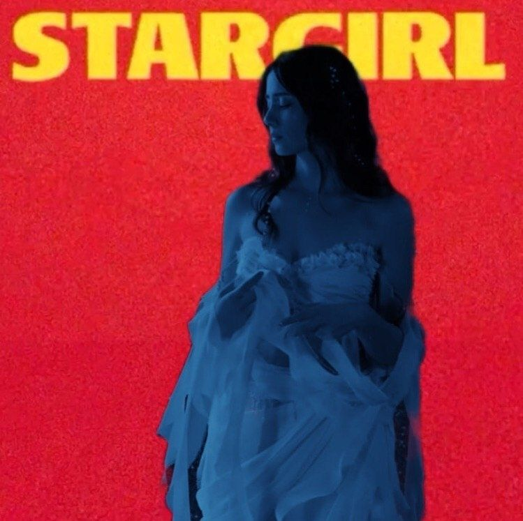

میا لندی
.کیمیا روانگر با نام مستعار میا متولد6نوامبرسال1992.اودر کنکور سال1390 رتبه 2آورد ودرسال1395لیسانس طراحی صنعتی گرفت..کیمیا از 6سالگی کلاس موسیقی رفت و علاقش اش به موسیقی را به کمک برادرش خشایار که دو سال از او بزرگ تر بود کسب کرد و همین شعله ای بود برای اشنایی با یار و یاورش....
کوروش توپیا
کوروش زراندوز در آبان1369در تهران متولد شد,او در سن12 سالگی با نواختن گیتار وارد دنیای موسیقی شد.یا اینکه کوروش در رشته مهتدسی معماری تحصیلش پایان یافت به پایان رساند اما مسیر شغلی اش در دنیای هنر تعریف شده بود.کوروش با بسیاری از یوتیوبر های مطرح ایرانی نظیر آریا کیوکسر,پوریا پوتک همکاری داشته است....
ایمان آبادی
ایمان دست پاک در ایران متولد شده و اطلاعاتی درست در مورد سن وتاریخ تولدش در دسترس نیست.ایمان با پادکستی به نام خودکست وارد دنیای تولید محتوا شدکه بیش از 340 قسمت دارد.ایمان دست پاک عاششق موتور سواری,بازی های ویدیویی,تجربه های جدید است.او در کنار کوروش تاکیید میکنند که دگم نباشید...